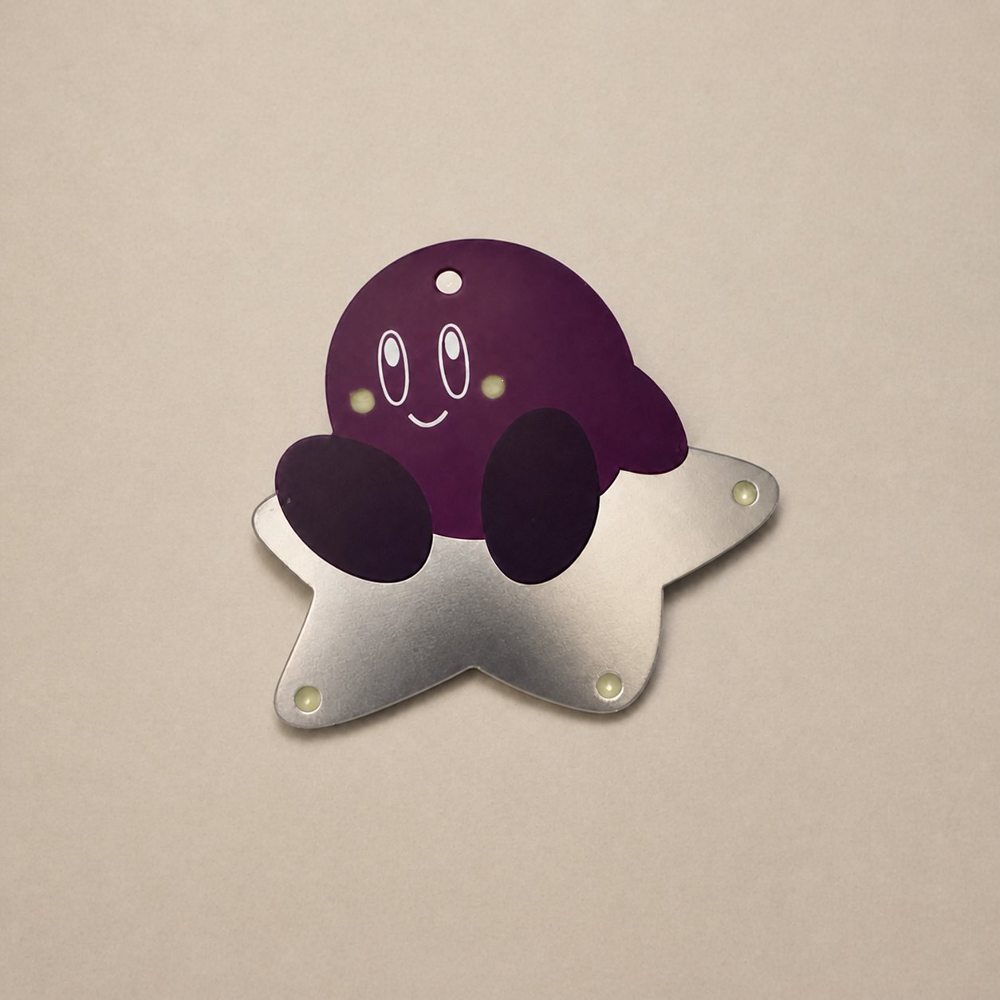

0x5000Project · Kirby LED Keychain0%Personal Project
Electrical · 3 weeks · Personal
Kirby LED Keychain
A pure analog LED chaser on a custom Kirby-shaped PCB. No microcontroller, just a 555 timer and decade counters.
No microcontrollerAuto-shutoffCustom PCB art
Role
Circuit and PCB designer
Team
Independent build
My contribution
Analog sequencing, auto-shutoff circuit, schematic, PCB layout, artwork, and fabrication

Overview
As another personal gift project for my girlfriend, I designed a Kirby-themed LED keychain that lights up with a sequential chase animation at the press of a button. The twist: the entire circuit runs on pure analog and discrete logic with no microcontroller, no firmware, and no programming.
I wanted to prove that a charming, interactive gadget can be built from first principles using nothing but a 555 timer, decade counters, and a handful of passives, all powered by a single CR2032 coin cell.
Circuit Design
The clock source is an LMC555 CMOS timer running in astable mode at roughly 10 Hz. Its output feeds a CD4017 decade counter that sequences five LEDs one at a time. A second CD4017 counts full animation loops; after nine cycles the circuit latches off through a PNP transistor that cuts power to the oscillator.
A momentary pushbutton resets the loop counter and re-enables the 555. Press once and the LEDs chase for about five seconds, then the circuit shuts itself down to conserve the coin cell. Fast-switching 1N4148 diodes form a simple OR gate that feeds the reset logic.
The entire design runs at 3.3 V directly from the CR2032 with no regulator. Auto-shutoff is what makes the cell last: after each chase the PNP cuts power to the oscillator, so the board sits near leakage current until the next button press.
The following battery-life estimate is calculated from a typical CR2032 capacity and the listed current and usage assumptions; it is not a long-duration measured result:
Cell
CR2032, ~225 mAh usable (datasheet-typical)
Idle
~2 µA leakage with the 555 powered down → 2 µA × 24 h = 0.048 mAh/day
Chase
~3 mA average (one LED + CMOS clock/counters) for ~5 s → 3 mA × 5/3600 h = 0.0042 mAh per press
Use
5 presses/day → 5 × 0.0042 = 0.021 mAh/day active
Total
0.048 + 0.021 = 0.069 mAh/day
Calculated life
225 / 0.069 ≈ 3,300 days ≈ 9 years under these assumptions
Even at a heavier 10 presses/day and 5 µA idle, the same math lands around 4 years. Without auto-shutoff, a continuous 3 mA draw would empty the cell in about three days, so the latch is the whole battery story.
Start or Enter to run the chaseKirby LED keychain, back
PCB Art
The board itself is shaped as Kirby and doubles as the visual centerpiece. I used four PCB fabrication layers as artistic media:
Solder mask over copper: the main body is a copper fill covered by pink solder mask, giving Kirby his signature color with a smooth, uniform finish.
Exposed HASL: the star on Kirby’s back is drawn as copper with no solder mask, leaving shiny exposed tin that catches light.
Silkscreen: Kirby’s face (eyes, mouth, blush) is printed in white silkscreen ink on the front mask layer.
Solder mask over bare substrate: the feet use colored mask with no copper underneath, creating a matte contrast against the body.
All components live on the back side, keeping the front as a clean canvas for the artwork.
Fabrication
I ordered fully assembled boards from JLCPCB. The SMD bill of materials (0805 passives, SOT-23 transistor, SOIC timer and counters, SOD-323 diodes) was chosen entirely from JLCPCB’s parts library to keep assembly turnkey. The only through-hole component is the 12 mm tactile switch on the back, hand-soldered after boards arrived.
Zero-ohm resistors scattered across the back serve as PCB jumpers to avoid routing traces on the front of the board.
Results
With no firmware to write or debug, the three-week timeline went into schematic capture, PCB layout, and art. The auto-shutoff math above is why a single CR2032 covers years of daily presses instead of days of continuous draw. The finished keychain proves the point, running as a charming, interactive gadget built entirely from a 555, two decade counters, and a handful of passives, with no code anywhere in the loop. Doing it in pure discrete logic took more deliberate design than a microcontroller, but leaves the board self-contained and maintenance-free on a single coin cell.